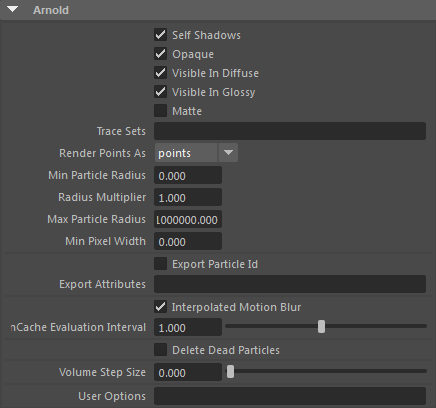
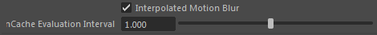
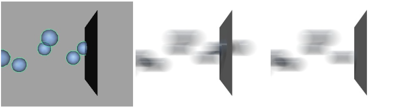
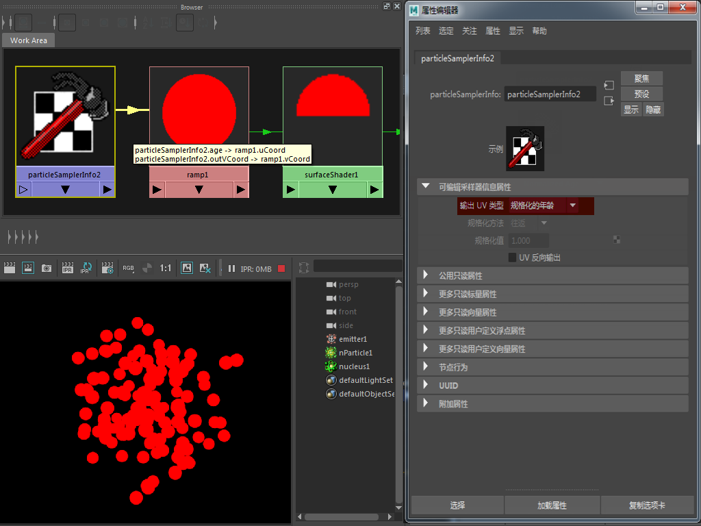
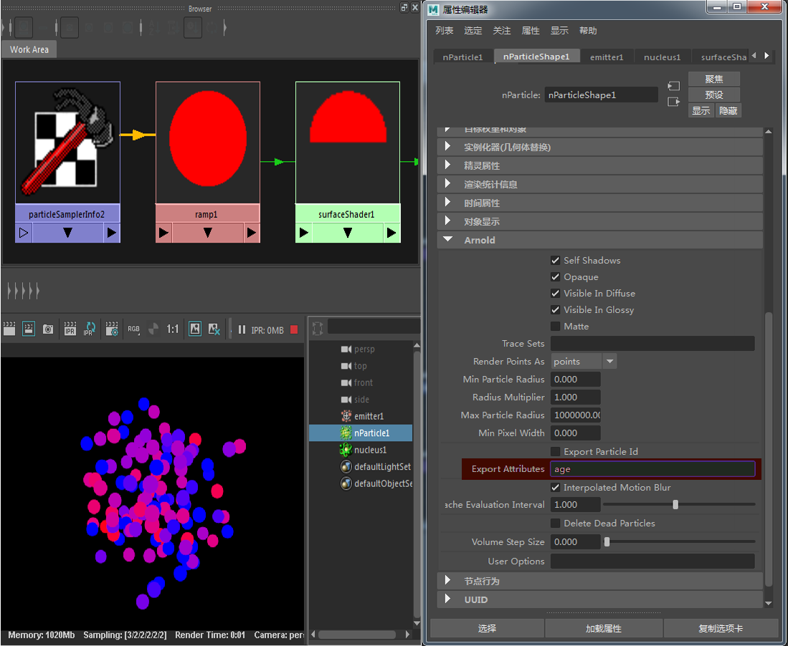

| 延伸阅读 |
|---|
| 有关 Arnold 形状和形状参数的完整文档，请参见《Arnold 用户手册》中的形状。 |

MtoA 支持 Maya 粒子和 nParticle，但目前存在一些限制：
| 有关演示将 nParticle 渲染为体积的 Maya 场景，请单击此处。 |
|---|
如果场景中的运动模糊关键帧与 nParticle 缓存采样时间不匹配，则会出现瑕疵。“插值运动模糊”(Interpolated Motion Blur)检查通过使用缓存中最近的采样可避免此情况。此选项要求“nCache 求值间隔”(nCache Evaluation Interval)属性与创建 nCache 时使用的“nCache 帧求值频率”(nCache Evaluate Every # frame(s))选项相同。

使用运动模糊时，此选项将禁止渲染超出最大粒子“寿命”(Lifespan)范围的粒子。

粒子最大寿命范围达到多边形平面（左）。删除无效粒子(Delete Dead Particles)：禁用。运动模糊超出粒子寿命（错误）（中心）。删除无效粒子(Delete Dead Particles)：启用（运动模糊正确）（右）。
MtoA 不导出 particleSamplerInfo 节点。它会导出某些“userDataXXX”节点，而这些节点需要导出粒子对象中的信息。
在下面的示例中，一个 particleSamplerInfo 连接到渐变纹理的 UV 坐标，且“输出 UV 类型”(Out UV Type)设置为“规格化的年龄”(Normalized Age)：

particleSamplerInfo 被忽略，且随着时间的推移，粒子颜色保持不变
默认情况下无法做到这一点。要想做到这一点，请选择 particleShape 节点，并在“Arnold”部分的“导出属性”(Export Attributes)中键入“age”：

向 ParticleShape 节点的 Arnold 导出属性添加“年龄”(Age)可修复与 particleSamplerInfo 节点的连接
| 有关演示上述粒子采样器信息工作流的 Maya 场景文件，请单击此处。 |
|---|
仅当 particleShape 的“Arnold”部分中的“不透明度”(Opacity)为禁用时，才会导出 OpacityPP 及粒子。
将 Maya 粒子实例化器与*替代对象*结合使用是生成复杂场景的有效方法。